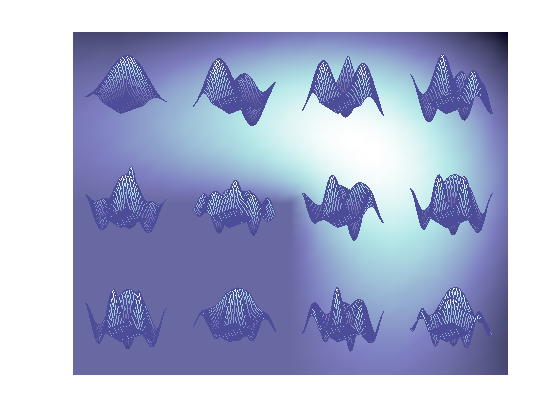

By Ned Gulley, 6-21-93.
This is an example of the SURFL function being superimposed on top of a PCOLOR plot with interpolated shading. This image looks best if you make your figure window as large as possible.
These are 12 eigenfunctions that arise when solving the wave equation for an L-shaped membrane. The first mode, in the upper left corner, shows up quite a lot in MATLAB demos: it is the company logo for The MathWorks, Inc.
data = load('vibesdat'); pcolor(data.L1) axis off shading interp colormap(fliplr(pink)); ax = get(gca,'Position'); for n = 1:12 xPos = (rem(n-1,4)/4)*ax(3)+ax(1); yPos = ((2-floor((n-1)/4))/3)*ax(4)+ax(2); xLen = (1/4)*ax(3); yLen = (1/3)*ax(4); axes( ... 'Units','normalized', ... 'Position',[xPos yPos xLen yLen]); h = feval('surf',data.(['L' num2str(n)])); set(h,'EdgeColor',[0.3 0.3 0.6]); axis off end